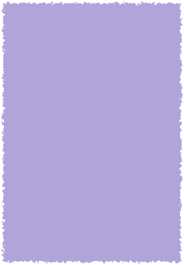
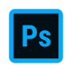
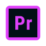

Webデザイン
UI / UXを考えながら、
使いやすいWebサイトを
デザインします。
Webデザイナー
フロントエンド開発を勉強中
ミャンマー出身。
神戸電子専門学校でデザインを学んでいます。
Webデザインを中心に、
ユーザー目線の「使いやすさ」と
「伝わりやすさ」を大切にしています。

神戸・日本
Web Design
UI / UX
Front-end
UI / UXを考えながら、
使いやすいWebサイトを
デザインします。
HTML・CSS・JavaScriptを学び、
デザインをWebサイト
として取り組んでいます。
ポスターやロゴなど、
目的に合わせた
ビジュアルを制作します。
Premiere Proを使用し、
映像編集やモーション制作に
取り組んでいます。


デザインからWeb制作まで、目的に合わせてツールを使い分けています。
ス ヤミン タイ
ミャンマー出身。
神戸電子専門学校でデザインを学んでいます。
Webデザインを中心に、
デザインとコーディングの両方から
魅力的なWebサイトをつくることを目指しています。
情報を整理し、
見る人が迷わず内容を理解できる
デザインを心がけています。
見た目の美しさだけではなく、
ユーザーが自然に操作できる
ことを大切にしています。
デザインだけで終わらせず、
実際の使いやすさや実装まで
考えながら、Webサイトを
つくることを目指しています。